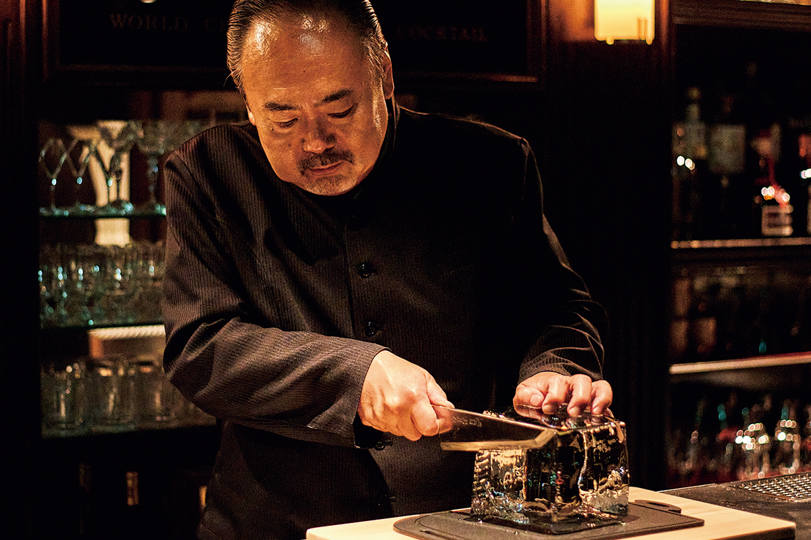
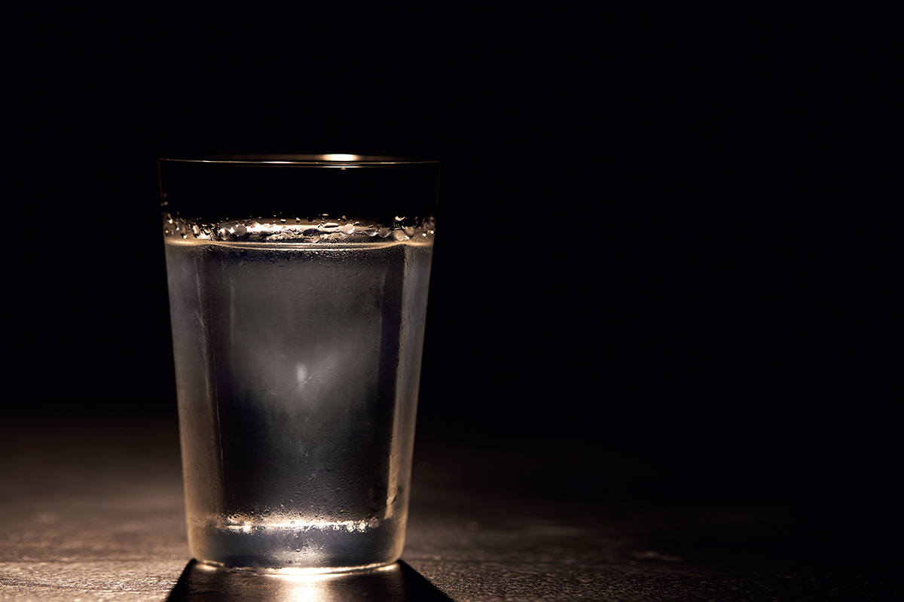
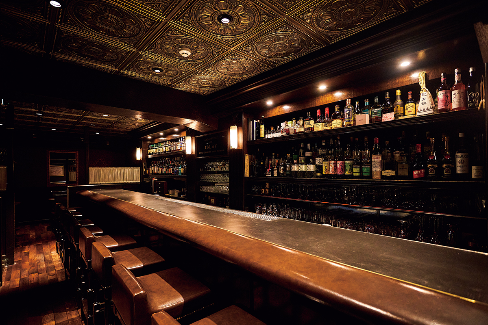
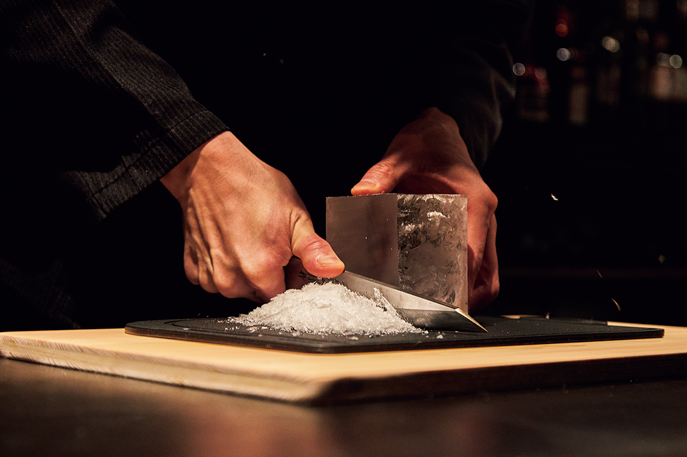
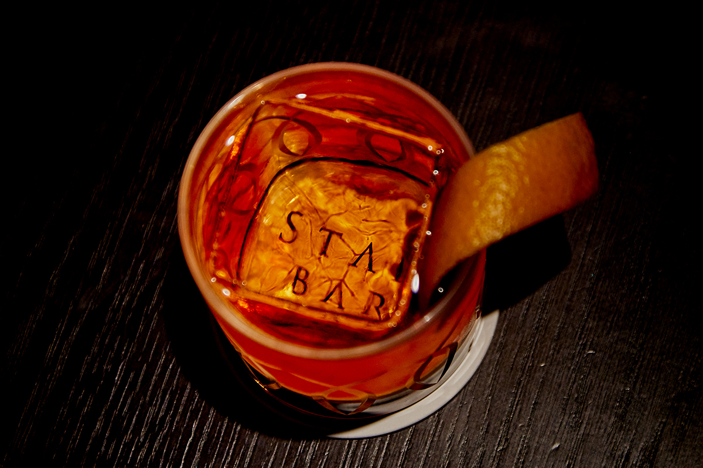
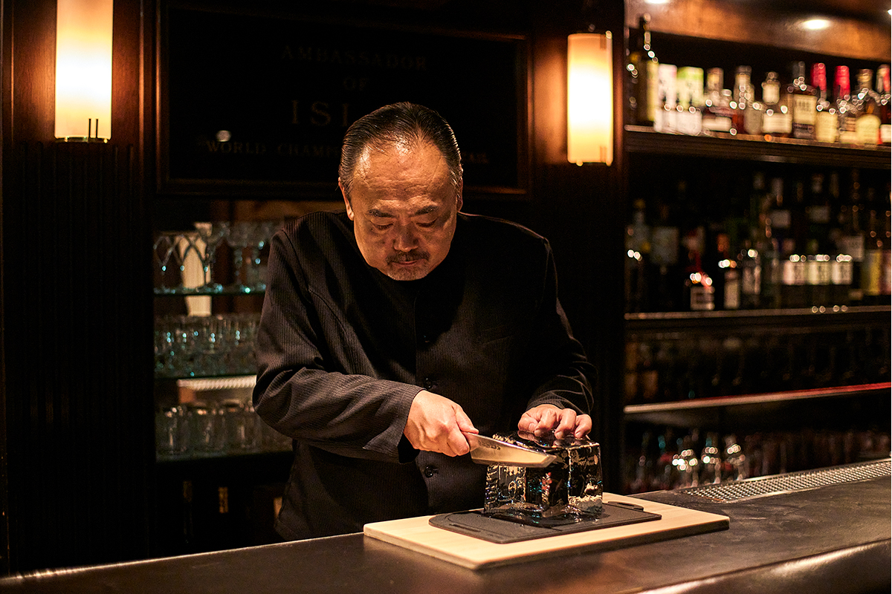
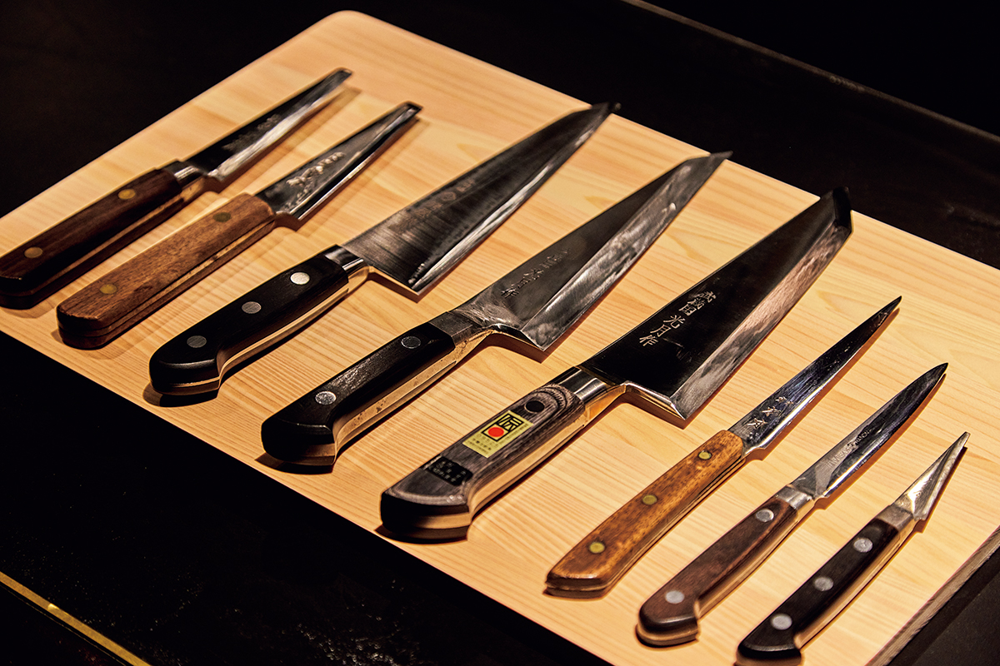
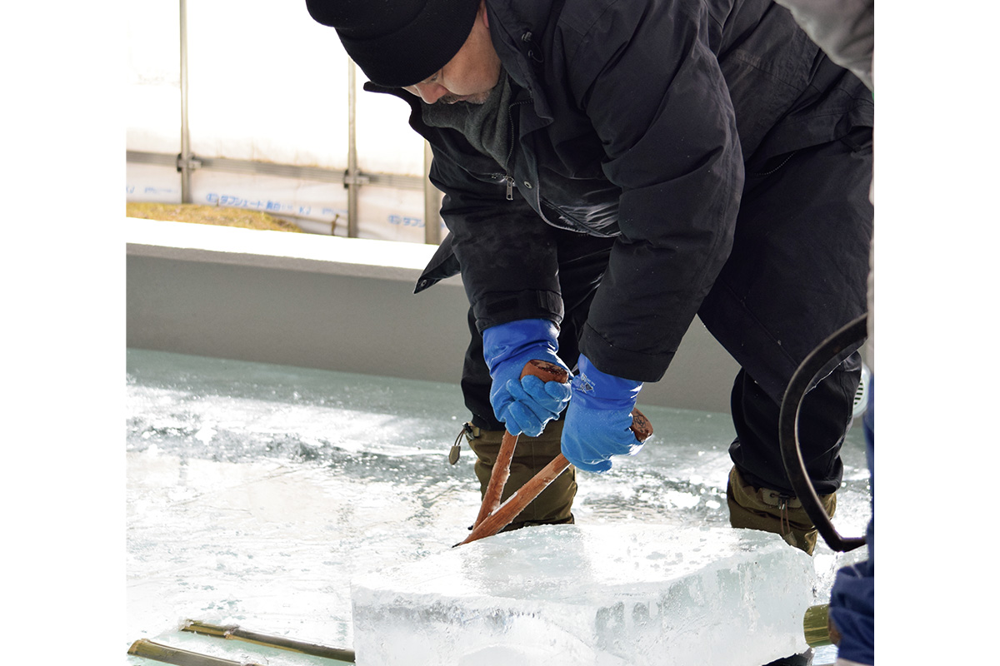
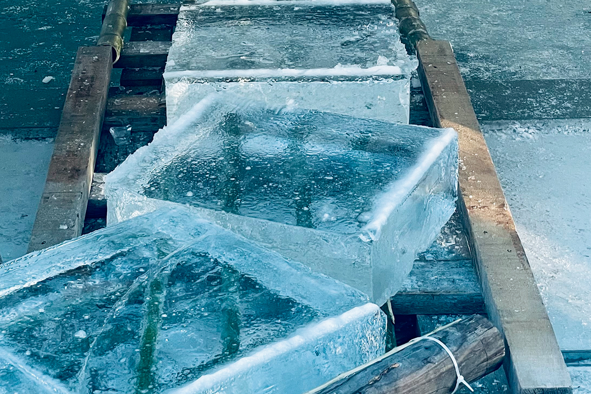
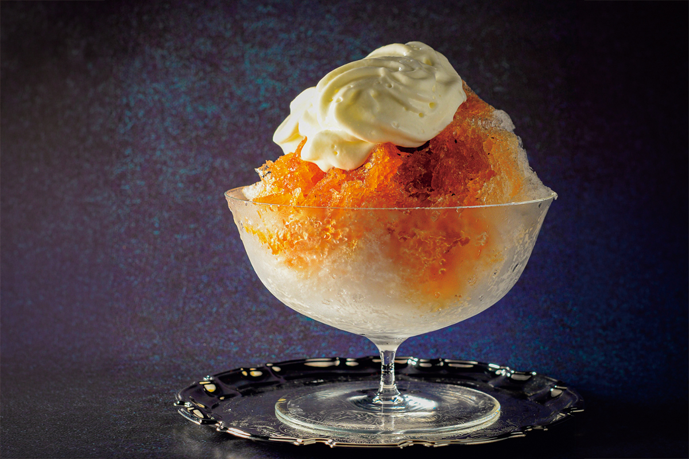

Токио · Гиндза · бар
Star Bar Ginza: Хисаси Киси и лёд, который исчезает в бокале

В баре лёд обычно считают второстепенной деталью. Хисаси Киси, бармен и глава Star Bar, почти сорок лет доказывает обратное, и его лёд, который за границей прозвали NINJA ICE, повторяют бармены всего мира.
Бокал
Лёд, который прячется в джине
Хисаси Киси говорит, что лёд в баре то же, что рис в суши. Возможности льда он изучает уже около сорока лет и по праву считается главным знатоком этого дела.

Его «Ниндзя-айс джин-тоник» построен на принципе «ничего лишнего», и в Японии и за границей его называют идеальной классикой. Лёд в стакане прозрачен как хрусталь: когда в бокал наливают напиток, граница между льдом и жидкостью пропадает, и лёд словно исчезает, как ниндзя, который умеет становиться невидимым. Отсюда и прозвище NINJA ICE.
Начало
Чем молодой бармен мог удивить гостей
Киси начал учиться ремеслу бармена в Гиндзе в 23 года. Бар тогда был особым светским местом для немногих: дорогие напитки на полках, обслуживание высшего класса. Молодой бармен искал, чем он сам может порадовать гостей.

«Гостями были в основном люди лет пятидесяти и шестидесяти, директора компаний и те, к кому обращаются „сэнсэй“, и меня, молодого, они опекали. Но мне, конечно, не хватало умения, чтобы ответить на их доверие. Я искал, чем ещё, кроме характера и сервиса, можно их порадовать. Так я и обратил внимание на лёд»
Хисаси Киси
В барах тогда обычно использовали колотый лёд из больших блоков чистого льда. Киси хотел льда совсем другого качества.
«Мне казалось, что у льда гораздо больше возможностей. Хороший алкоголь плюс другой лёд, и вкус может стать иным, ещё лучше»
Хисаси Киси
Всерьёз льдом тогда не занимался никто, даже среди барменов. Лёд принято было обкалывать пешнёй, а Киси стал резать его ножом: выбирать угол и размер, подгонять кусок под конкретный бокал. Из этих опытов вырос его «бриллиантовый лёд», огранённый многогранник. Придумать его помогли бокалы, которые Киси подбирал для своего бара Star Bar, открытого в Гиндзе в 2000 году. Лёд сверкал в бокале, как драгоценный камень, и удивил всю профессию. Но для Киси главным был не вид.
«Важна не форма льда, а то, что он делает в бокале»
Хисаси Киси

Ремесло
Лёд как часть коктейля
В соцсетях в 2020-х годах в моде необычные кубики льда, но красота льда сама по себе Киси не интересует. По его мысли, «пространство» в бокале складывается только тогда, когда бокал, напиток и лёд работают вместе.

Лёд не просто охлаждает напиток и разбавляет его. Талая вода связывает напитки между собой и скругляет вкус, работает как катализатор.
«Виски набирает аромат, пока зреет в бочке, и его ноты связываются. Капли, которые отдаёт лёд, делают нечто похожее. Хороший лёд на время соединяет всё»
Хисаси Киси
Поэтому металлические или керамические кубики, которые не тают, настоящего вкуса коктейлю не дадут. Именно немного талой воды доводит вкус до конца.

И в резке льда Киси добивается предельной точности. Он берёт японские ножи из углеродистой стали с односторонней заточкой и сам выравнивает их обратную сторону до идеальной плоскости.
«Лёд кажется твёрдым, но это ведь вода. Главное, как лезвие за него цепляется»
Хисаси Киси
В отличие от зарубежных ножей с двусторонней заточкой, японский нож входит в лёд под нужным углом. Если кромка уйдёт хотя бы на миллиметр, рука чувствует лёд иначе, поэтому ножи Киси точит сам, как повар суши.

Три льда
Чистый, «замешанный» и природный
В 2026 году Киси использует три вида льда, каждый для своего. Первый это чистый лёд от специальных ледовых мастерских: кристаллы в нём вытянуты вертикально, крепость алкоголя в нём чувствуется сильнее, и он хорош для коктейлей в шейкере.
Второй лёд делают в самом Star Bar в Киото. Киси привлекло качество киотской воды, он получил разрешение на производство льда и поставил в баре особый конвекционный морозильник. Вода в нём всё время движется и замерзает так, будто её замешивают, поэтому лёд назвали «замешанным». Полностью он замерзает за пять дней. Кристаллы в нём направлены в разные стороны, и на вкус он где-то посередине между чистым льдом и природным.
Третий лёд природный, и заготавливает его сам Киси на горе Татэсина в префектуре Нагано.

С природным льдом он впервые столкнулся в конце 1980-х годов в Титибу, горном районе к северо-западу от Токио. Уже тогда там говорили, что потепление мешает делать лёд.
«Мастера всерьёз говорили, что если так пойдёт дальше, лёд перестанет получаться»
Хисаси Киси
Эти слова он запомнил надолго. Во время пандемии Киси объездил разные районы в поисках идеальной воды и холода и остановился на посёлке Татэсина в Нагано. Рядом со священной горой, на которой рубят деревья для праздника Онбасира, нашёлся источник, который берегут уже 500 лет. Киси понял, что здесь получится по-настоящему хороший природный лёд.

Однако место лежит в квазинациональном парке, и заготовка льда там строго ограничена. Переговоры с властями, горы бумаг, поиск денег: Киси сам писал заявки на субсидии и с помощью местных жителей всё же добился права заготавливать лёд.
Природный лёд растёт медленно, только за счёт зимнего холода: примерно на сантиметр в день от поверхности, около двух недель.
«У природного льда огромные кристаллы»
Хисаси Киси
Они в десять с лишним раз крупнее, чем у чистого льда. Поэтому острота алкоголя сглаживается, а вкус становится удивительно мягким. Особенно это заметно в напитках со льдом и в хайболе.
Чтобы лёд был в нужном состоянии, в Star Bar работают четыре морозильника: для хранения, для нарезки и для льда перед самым открытием, каждый со своей температурой, чтобы лёд не испытывал резких перепадов. Когда на лёд наливают напиток, он может треснуть от теплового удара, поэтому во время работы бара лёд режут и доводят по ходу вечера, следя за его состоянием, и пускают в дело в нужную минуту.
Бар
Японская школа льда
Японскую барную культуру высоко ценят и за границей. Иностранные медиа и соцсети называют лёд Киси NINJA ICE, и многие бармены его повторяют.

«Японский бар всегда больше ценил не сам лёд, а то, как лёд и напиток живут вместе. Одна техника работы со льдом чего стоит, а система доставки? Мастерские, которые нарезают чистый лёд и привозят его в бар, есть повсюду. Такого, по-моему, нет больше нигде в мире»
Хисаси Киси
Киси сравнивает приготовление коктейля с тем, как подбирают температуру воды в ванне: не слишком сильно и не слишком слабо, чтобы напиток входил в тело без малейшей неловкости. Лёд для того и нужен. Он не мешает главному, но без него не обойтись: тихо стоит рядом и держит весь бокал.
Star Bar Ginza открывается вечером, а бар в Хибии, в комплексе Tokyo Midtown Hibiya, по выходным и праздникам начинает работу раньше.
Star Bar Ginza
- Адрес
- Токио, Тюо, Гиндза, 1-5-13
- Телефон
- +81 3-3535-8005
- Часы работы
- 17:00–23:30
- Выходные
- без выходных
- Сайт
- starbar.jp
Star Bar Hibiya
- Адрес
- Токио, Тиёда, Юракутё, 1-1-2, Tokyo Midtown Hibiya, 3-й этаж
- Телефон
- +81 3-6206-1560
- Часы работы
- 17:00–23:00, в субботу, воскресенье и праздники 15:00–23:00
- Выходные
- понедельник, первый и третий вторник месяца
- Сайт
- starbar.jp
Фото: Сатоси Инокути.